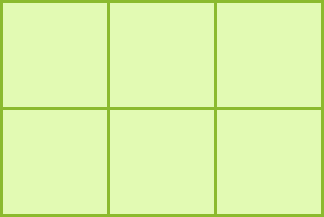
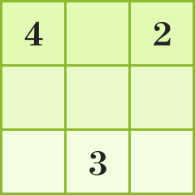

한 변의 길이가 1인 정사각형이 있다.
이 정사각형을 이어 붙여서 서로 다른 모직사각형을 만들어 보자.
이때 서로 완전히 포개어지는 직사각형은 같은 것으로 생각한다.
한 변의 길이가 1인 정사각형 두 개를 이어 붙여서 만들 수 있는 직사각형은 가로, 세로의 길이가
1,2인 직사각형뿐이다.
즉, 두 개의 정사각형을 이어 붙여서 만들 수 있는 직사각형은 오직 한 가지이다.
한 변의 길이가 1인 정사각형 세 개를 이어 붙여서 만들 수 있는 직사각형은 가로, 세로의 길이가
1,3인 직사각형뿐이다.
즉, 세 개의 정사각형을 이어 붙여서 만들 수 있는 직사각형은 오직 한 가지이다.
한 변의 길이가 1인 정사각형 네 개를 이어 붙여서 만들 수 있는 직사각형은 가로, 세로의 길이가
1,4인
직사각형과 가로, 세로의 길이가 모두 2인 정사각형이다.
즉, 네 개의 정사각형을 이어 붙여서 만들 수 있는 직사각형은 두 가지이다.
한 변의 길이가 1인 정사각형 다섯 개를 이어 붙여서 만들 수 있는 직사각형은 가로, 세로의 길이가
1,5인
직사각형뿐이다.
즉, 다섯 개의 정사각형을 이어 붙여서 만들 수 있는 직사각형은 오직 한 가지이다.
한 변의 길이가 1인 정사각형 여섯 개를 이어 붙여서 만들 수 있는 직사각형은 가로, 세로의 길이가
1,6인
직사각형과 가로, 세로의 길이가 2,3인 직사각형이다.
즉, 여섯 개의 정사각형을 이어 붙여서 만들 수 있는 직사각형은 두 가지이다.

한 변의 길이가 1인 정사각형 일곱 개를 이어 붙여서 만들 수 있는 직사각형은 가로, 세로의 길이가
1,7인
직사각형뿐이다.
즉, 일곱 개의 정사각형을 이어 붙여서 만들 수 있는 직사각형은 오직 한 가지이다.
직사각형을 한 가지만 만들 수 있을 때와 여러 가지 만들 수 있을 때의 차이점을 생각해 보자.
직사각형을 한 가지만 만들 수 있을 때는 이어 붙이는 정사각형의 개수가 소수일 때이고, 직사각형을 여러 가지
만들 수 있을 때는 이어 붙이는 정사각형의 개수가 합성수일 때이다. 정사각형의 개수를 두 자연수의 곱으로
나타내면 이 두 자연수는 직사각형의 가로, 세로의 길이가 된다.
직사각형을 한 가지만 만들 수 있을 때와 여러 가지 만들 수 있을 때의 차이점을 생각해 보자.
한 변의 길이가 1인 정사각형 열두 개를 이어 붙여서 만들 수 있는 직사각형을 생각해 보자.
12를 두 자연수의 곱으로 나타내면
12=1_12, 12=2_6, 12=3_4
이므로 만들 수 있는 직사각형은 가로, 세로의 길이가 1,12인 직사각형, 가로, 세로의 길이가
2,6인 직사각형,
가로, 세로의 길이가 3,4인 직사각형으로 모두 세 가지이다.
사각형 나누기 퍼즐로 불리는 테트라스퀘어에서 퍼즐판을 직사각형 모양의 영역으로 나누는
규칙은 다음과 같다.
(1) 모든 영역은 직사각형 모양으로 서로 겹치지 않게 나눈다.
(2) 각 영역은 숫자를 하나만 포함하여, 퍼즐판은 남김없이 나누어져야 한다.
(3) 퍼즐판 한 칸의 넓이는 1이고, 영역에 포함된 숫자는 그 영역의 넓이를 의미한다.
다음 테트라스퀘어를 해결해 보자.

숫자 4는 1_4 또는 2_2이므로 그릴 수 있는 직사각형은 두 가지이다.
이때 가로, 세로 모두 세 칸씩 있으므로
가로, 세로의 길이가 1,4인 직사각형은 그릴 수 없다. 따라서 한 변의 길이가 2인 정사각형으로 그려야 한다.
숫자 2는 1_2이므로 그릴 수 있는 직사각형은 한 가지이다. 이때 다른 숫자의 영역에 겹치지 않아야 하므로
가로의 길이가 1, 세로의 길이가 2인 직사각형으로 그려야 한다.
다음 테트라스퀘어를 해결해 보자.
남은 숫자 3은 가로의 길이가 3, 세로의 길이가
1인 직사각형으로 그려야 한다.
테트라스퀘어를 해결하는 전략은 소수와 합성수의 의미를 떠올리면서 접근할 수 있다.